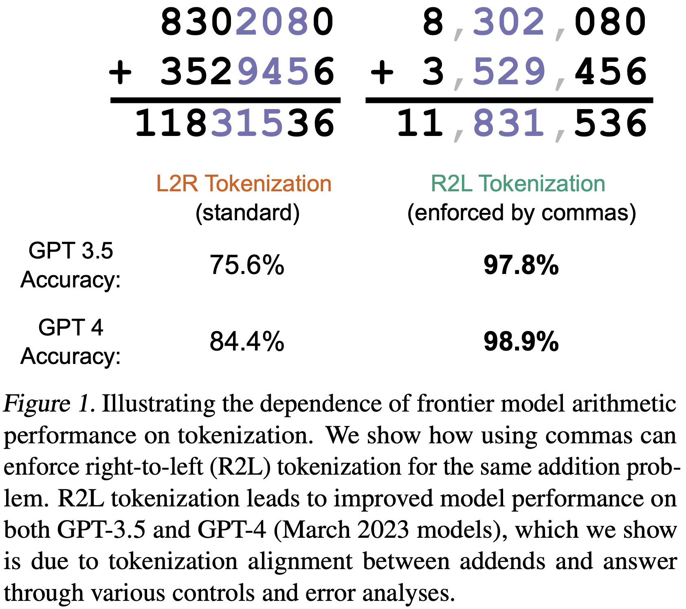
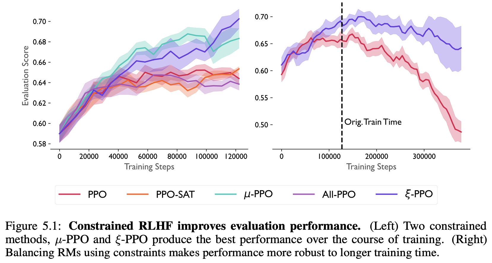
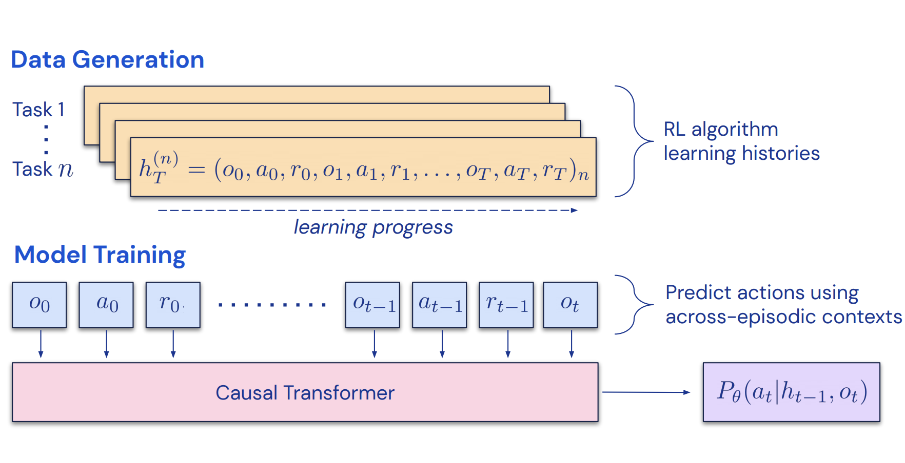
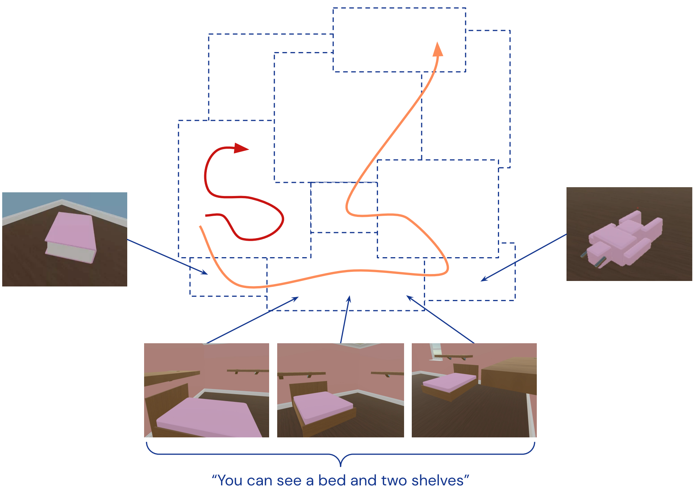
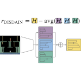
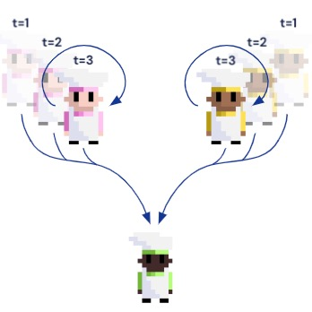

|
I am a Member of Technical Staff at OpenAI in San Francisco, where I work on large-scale reinforcement learning for reasoning. Previously, I was a Research Scientist at DeepMind in New York, where I worked on improving the reasoning capabilities of frontier models with the Blueshift team. I did my PhD in Physics at Princeton University, advised by David Schwab and Bill Bialek, and funded by a Hertz Fellowship and DOE Computational Science Graduate Fellowship. Before that, I did a master's at the University of Cambridge with Mate Lengyel as a Churchill Scholar and studied physics and mathematics at the University of Southern California, where I worked with Bartlett Mel and Paolo Zanardi and had a blog. Throughout my studies, I interned at DeepMind with Matt Botvinick, Stanford University with Kwabena Boahen, the Institute for Quantum Computing with Andrew Childs, and Spotify NYC with their machine learning team. I also enjoy a good puzzle. |

|
|
I'm broadly interested in improving reasoning capabilities in frontier models. Previously, I've worked on a variety of topics in reinforcement learning, including exploration, and training agents to play cooperative games with humans. My PhD thesis ("Optimization of MILES") focused on applications of the information bottleneck (IB) across supervised, unsupervised, and reinforcement learning, and definitely not on collecting airline miles. In past lives, I've also worked on quantum information theory and computational neuroscience. |
|
|
|
Gemini Team arxiv, 2024 arxiv | website | tweet | show bibtex We trained a math-specialized version of Gemini 1.5 Pro that was the first model to publicly exceed 90% on Hendrycks MATH, a benchmark of difficult competition-level high school math problems. See Section 7 of the report for more details, or the tweets from Oriol, Jeff, Behnam, and Sundar.
@misc{geminiteam2024gemini1p5, | |
|  |
Aaditya Singh, DJ Strouse arxiv, 2024 arxiv | github | tweet | show bibtex We show that frontier LLMs (GPT-3.5 and GPT-4) are better at doing addition when numbers are tokenized right-to-left (consistent with the direction we do addition), rather than the default left-to-right. We show that the errors models make with left-to-right number tokenization are highly stereotyped, suggesting systematic rather than random issues with the addition algorithm models learn. We also find evidence that the effects of number tokenization are scale-dependent, with larger models (GPT-4) exhibiting weaker effects than presumably smaller models (GPT-4 Turbo).
@misc{singh2024tokenization, |
|  |
Ted Moskovitz, Aaditya Singh, DJ Strouse, Tuomas Sandholm, Ruslan Salakhutdinov, Anca D. Dragan, Stephen McAleer International Conference on Learning Representations (ICLR), 2024 arxiv | openreview | tweet | show bibtex We use tools from constrained optimization to combat overoptimization during reinforcement learning from human feedback (RLHF) against multiple reward models.
@inproceedings{moskovitz2023crlhf, |
|  |
Michael Laskin, Luyu Wang, Junhyuk Oh, Emilio Parisotto, Stephen Spencer, Richie Steigerwald, DJ Strouse, Steven Hansen Angelos Filos, Ethan Brooks, Maxime Gazeau, Himanshu Sahni, Satinder Singh, Vlad Mnih International Conference on Learning Representations (ICLR), 2023 arxiv | openreview | tweet | show bibtex We demonstrate that it is possible to distill entire reinforcement learning (RL) algorithms into the in-context learning abilities of a Transformer, by training models to do supervised prediction of multi-episodic trajectories from RL agents.
@inproceedings{laskin2023ad, |
|  |
Allison Tam, Neil Rabinowitz, Andrew Lampinen, Nicholas Roy, Stephanie Chan, DJ Strouse, Jane Wang, Andrea Banino, Felix Hill Neural Information Processing Systems (NeurIPS), 2022 arxiv | openreview | neurips | tweet | show bibtex Exploration in RL traditionally encouraged agents to visit random unexplored states. Taking advantage of improvements in multimodal frontier models, we show how to improve exploration by guiding agents towards semantically novel states, greatly speeding up learning.
@inproceedings{tam2022exploration, |
|  |
DJ Strouse*, Kate Baumli, David Warde-Farley, Vlad Mnih, Steven Hansen* International Conference on Learning Representations (ICLR), 2022 arxiv | openreview | github | tweet | show bibtex We highlight the inherent pessmism towards exploration in a popular family of variational unsupervised skill learning methods. To curb this pessimism, we propose an ensemble uncertainty based exploration bonus that we call discriminator disagreement intrinsic reward, or DISDAIN. We show that DISDAIN improves skill learning in both a gridworld and the Atari57 suite. Thus, we encourage researchers to treat pessimism with DISDAIN.
@inproceedings{strouse2022disdain, |
|  |
DJ Strouse*, Kevin R. McKee, Matt Botvinick, Edward Hughes, Richard Everett* Neural Information Processing Systems (NeurIPS), 2021 arxiv | neurips | openreview | tweet | alignment newsletter | show bibtex We introduce Fictitious Co-Play (FCP), a simple and intuitive training method for producing agents capable of zero-shot coordination with humans in Overcooked. FCP works by training an agent as the best response to a frozen pool of self-play agents and their past checkpoints. Notably, FCP exhibits robust generalization to humans, despite not using any human data during training.
@inproceedings{strouse2021fcp, |

|
Natasha Jaques, Angeliki Lazaridou, Edward Hughes, Caglar Gulcehre, Pedro A. Ortega, DJ Strouse, Joel Z. Leibo, Nando de Freitas International Conference on Machine Learning (ICML), 2019 arxiv | icml | openreview | show bibtex We reward agents for influencing the actions of other agents, and show that this gives rise to better cooperation and more meaningful emergent communication protocols.
@inproceedings{jaques2019influence, |

|
Anirudh Goyal, Riashat Islam, DJ Strouse, Zafarali Ahmed, Hugo Larochelle, Matt Botvinick, Sergey Levine, Yoshua Bengio International Conference on Learning Representations (ICLR), 2019 arxiv | openreview | show bibtex We train agents in multi-goal environments with an information bottleneck between their goal and policy. This encourages agents to develop useful "habits" that generalize across goals. We identify the states where agents must deviate from their habits to solve a task as "decision states" and show that they are useful targets for an exploration bonus.
@inproceedings{goyal2019infobot, |

|
DJ Strouse, Max Kleiman-Weiner, Josh Tenenbaum, Matt Botvinick, David Schwab Neural Information Processing Systems (NIPS), 2018 arxiv | nips | code | show bibtex We train agents to cooperate / compete by regularizing the reward-relevant information they share with other agents, enabling agents trained alone to nevertheless perform well in a multi-agent setting.
@inproceedings{strouse2018intentions, |

|
DJ Strouse, David Schwab Neural Computation (NECO), 2019 pdf | neco | arxiv | code | show bibtex We show how to use the (deterministic) information bottleneck to perform geometric clustering, introducing a novel information-theoretic model selection criterion. We show how this relates to and generalizes k-means and gaussian mixture models (GMMs).
@article{strouse2019clustering, |

|
DJ Strouse, David Schwab Neural Computation (NECO), 2017 & Uncertainty in Artificial Intelligence (UAI), 2016 pdf | arxiv | code | uai | neco | show bibtex We introduce the deterministic information bottleneck (DIB), an alternative formulation of the information bottleneck that uses entropy instead of mutual information to measure compression. This results in a hard clustering algorithm with a built-in preference for using fewer clusters.
@article{strouse2017dib, |
| |